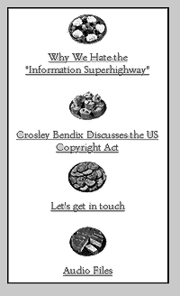

You either love them or you've never heard of them. They have
pioneered the art of sound appropriation and "recontextualizing" for
the purpose of creating unique audio collages. In 1988, they
managed to tour the world without leaving home via a device of their
own creation that allowed them to transmit live broadcasts over
phone lines, dubbing it their Teletour.
Even though Negativland has been around for nearly two decades,
it wasn't until 1991 that they garnered any mainstream attention. That
year the band released their "U2" single, a wicked parody of the
blarney band's song, "I Still Haven't Found What I'm Looking For"
mixed with sound clips of a cursin' Casey Kasem. What followed was
a flurry of legal attention from Island Records, U2's label, and
sporadic reporting of the facts by the music and pop-culture press.
Negativland went on to document their legal and financial woes in an
independent zine and CD called The Letter
U And The Numeral 2. This resulted in a lawsuit by Gregg
Ginn, owner of SST records, Negativland's then-record label. The
entire story can and should be read in all its brutal, hilarious and
outrageous detail in the book Fair Use: The Story Of The Letter U
And The Numeral 2, which also includes a bonus CD with a
prime example of Negativland's craftwork.
Today, the sonic outlaws continue their struggle against mediocrity
and the oppressively outdated U.S. copyright laws at
NegativWorldWide-WebLand (http://sunsite.unc.edu/id/negativland/).
There, users can find
a Negativland discography and ordering information as well
as links to sites regarding
copyright law and free legal representation for artists.
IU recently caught up with Negativland's Mark Hosler to discuss the
band's and his opinions of the Internet, intellectual property laws and
computer frustrations.
In the past, you've appropriated samples
from television, radio, movies, popular music and
various other sources...
Answering machines...
Yes, of course! Do you see any new opportunities for
appropriation with the Internet?
Well, you know, we were just down in Los Angeles--we were
artists in residence at a summer school for the arts for high school
students. ...There was a classroom where they were learning about
how to do digital imaging and learning about the Internet and
basically the assignment was that they were supposed to put
together some kind of a visual collage based on images that they
could grab from the Internet. What they were making was kind of an
original piece of collage art but it was made entirely from snips, you
know, snipped little chunks and manipulated images of things that
they grabbed from Web sites all over the world. It was sort of jaw-
dropping to me because I'm 34 years old and I'm thinking, ÎHere's
this 15-year-old kid and this is how he's being introduced to this
technology.' You can find all this stuff, but you can just go grab
anything you want and you can do anything you want with it. This
was a very interesting thing--this was a state-funded school and they
were letting Negativland come in. ...I told them before we went down,
I said, 'You realize that what we're going to tell your students are
things that are
on the questionable side of the law.'
It isn't necessarily even legal what we're telling kids to do...and they
were all for it.
And you don't have to pay royalties on the Internet.
And it's just out there and it's just this totally plastic, infinitely
reusable, recopiable, new medium. You can do anything you want
with it. And I thought, that is part of how this kid is getting his
worldview, his sort of technological and aesthetic worldview is being
formed by this. Now when I was that age we didn't have that. What
does this mean when thousands and thousands and thousands of
these kids grow up and this is what they grew up with as normal?
And it doesn't matter what the laws say. I don't care, regardless of
what the laws tell you, you can do this--the technology allows you to
do this. When you have all these links to other people's sites you can
be grabbing information from some site to use on your site because
it's appropriate, because it supports something you're talking about.
Or you can link to something else and there is a way in which it is
kind of this giant sort of collage you're making.
Do you have any impressions of how the Internet is going to
impact U.S. copyright laws?
It seems to me that it is certainly prompting multinational,
corporate-cultural producers to swoop down and try to make sure
that they can keep the Internet working the way they're used to the
copyright laws working for the last 100 years. I know there's been
some white papers circulating around D.C.
I followed [the link at your
site] to the National Information Infrastructure
(http://www.uspto.gov/web/ipnii/).
That stuff is like, 'Oh my God! Are these people insane? What
are they thinking?' I think what they want to do is they want to make
the [Service Provider] liable for any infringement that happens on
their servers, which means that the only service providers that can
afford to stay in business would be the ones that can take
the risk. They'd also end up having these really stringent and
draconian laws to scare the hell out of all of their users. Then you'd
have only the big people, only America Online would
be able to be out there...the little guys would dry up.
Just the people with
corporate backing?
Yeah. Of course what we hopefully all know is that the biggest
service providers, they have all kinds of censoring limitations on what
you can and cannot talk about. I've talked to people who've tried
really hard to find all that horrible pornography [on the Net]...all
they've ever been able to come up with was a bunch of stuff from
Playboy magazine.
My most recent [Negativland] purchase was Over The Edge,
Vol. 2: Pastor Dick: Muriel's Purse Fund and I thought it had a
hilarious satire of the Jack Chick religious tracts.
Yes, we worked very hard on that!
I loved that! Have you considered doing a spoof Web site along
those lines?
There's a lot of things we've talked about doing on the Internet
but the problem is we have no resources. All we have are volunteers
and when you have volunteers it's always hard to get them to do
anything because everyone does it in their spare time. If we had a
bunch of money, if everyone who read about the Negativland
vs. U2 lawsuit actually bought one of our records then maybe
we could do something. We don't have the money to throw at things
like that so we put our energy and time into things that we think we
can at least break even on, like putting out a CD. We have sat
around and talked about lots of different ideas like that and talked
about software programs we would like to have written to do different
things on our site. But trying to get somebody to do it, to take the
time, it's like a full-time job. I could imagine another type of group
(there probably already are some out there) but I could imagine
another type of band where one member of the band, his thing is
he's the Internet guy. He oversees the whole Internet thing.
Which of the members of Negativland have an interest in or
knowledge of the Internet?
I guess really, me and Chris (Grigg) and Don (Joyce) probably
more than anybody. I mean, Idon't even have a way to look at Web
sites on my own computer. I didn't even get
e-mail until less than a year ago. My feeling was anything that's this
hyped I just have an automatic aversion to. I'm being hyped and told
by everyone around me and all the media that you gotta have this
thing and immediately my contrariness comes up. I don't want that. I
have more than enough things to deal with just dealing with the mail
in my mailbox and my answering machine and trying to do
Negativland and run our record label. I just said, ÎGreat, that's just
what I need is hundreds of more messages and ways for people to
get to me.'
Now that you have e-mail or now that Negativland in general has
e-mail, what kind of responses have you gotten to your Web site?
Oh, well the Web site's been up for a while. We have this
because the good folks at Sunsite at the University of North Carolina
donated the space to us. There is no way in hell Negativland could
afford the computers, the disk space, all that stuff to have our own
site--there's no way it could happen. We worked at kind of
architecting what the site would be like and one of the reasons we
were given the site was that the folks there felt that ÎHere, let's hand
Negativland this new medium to work in and given the way that
Negativland's brains work, they'll probably come up, over time, with
some kooky,
interesting, fun things to do with it...'
Your site definitely seems to be one of the cleanest and it gets
right to the point--there doesn't seem to be a lot
of fluff.
We've had lots of compliments on the site and to be honest, I
don't think we have a particularly great site. I think all it means is that
most sites are so shitty. ...It's just my feeling about computers in
general that computers are a toolwever, the way computers
are sold to the American public through all of those magazines,
probably like yours and Wired, and through all of those
companies that make all the computers, is that it is sort of sold like
it's the tool. It's the thing, it's the thing you gotta have
and it's not. It's just a tool. So since I got e-mail, I've been sort of
taking it very slowly. I just want it to be this little thing I have that I
can use, that's useful for certain types of communication. I have a
Mac SE. It's about nine years old. I was amazed at how difficult it
was to get on the Internet.
It was just unbelievably stupid and cumbersome and ridiculous. I
couldn't make anything work on the computer that I have because it
was too old. I was running into the fact that the computer industry is
the ultimate in planned obsolescence because it's just constantly out-
moding itself every six months to the point where, gee, I can't even
get on the Internet with this Mac SE because I can't get my Internet
starter kit software to even read inside my computer because it's the
wrong size disk drive...
Technology is definitely not kind to people who haven't kept
current.
Which again, is this kind of economic, exclusionary thing.
Nowadays, people do ask me advice sometimes about computers
because they seem to think Negativland is somehow really techno-
savvy. And I'll say, if you want to do some kind of sound-editing stuff
or some graphics, look for a used Mac IIci. You can get them for like
$1,000 and they're just fantastic. They're totally great. They'll do
everything you want; just get something old and don't worry about
the new thing.
With advances in broadcast technology on the Internet, do you
think that Negativland will start distributing recordings over the Web?
Well I find that currently, there is a lot of hype and brouhaha
over the RealAudio stuff and I think it's a very nice idea but, again, it
is all just a total bunch of shit! It is a bunch of bullshit, it is all hype!
Basically, I worked very hard with my friends to make these amazing-
sounding stereo recordings in full fidelity and to have it come over
in mono and sounding like a good
AM radio is not my idea of a good way...it's interesting but it's not my
ideal way, not by a longshot. On the other hand, if I was taking
something where I intended it, from the beginning, from the very get-
go, you create the work so that part of the aesthetic is that it has this
certain limited, lo-fi sound quality, then that's different. We do have
this serialized novel that we're going to be putting up in the next
couple of months, a chapter a month, on our site and there will be
these buttons you can push to get RealAudio out of some sounds
that go with it. We know that they're not going to sound perfect, but
we sort of know that going in.
Which brings us back around to the whole thing about staying
ahead of the curve and having the latest version of the software.
I have no interest in staying ahead of any curve in terms of
technology. I have an interest in staying "ahead" of ideas. What
Negativland has always been interested in and excited by is the idea-
-the cool idea, the weird, confusing, strange, perhaps subversive
idea. That's what we're really concerned about. I'm also trying to
reconcile myself to the fact that I grew up in a certain era and there
are certain things I understand better. I have a certain way of working
where I can work pretty fast in the studio using a certain level of
technology, but if you suddenly tell me to start running an automated
mix-down software program, I'm going to get all mixed up. I'm not
going to get anything done. Right now, our studio is made up of
separate components but it's obvious that what's starting to happen
now and will increasingly happen, is you're going to have something
that's going to be a recording unit, a mixer, a mix-down thing and
your effects all in one box.
Absolutely.
I could see that handwriting on the wall a few years ago. That
was obvious they were going to do it. It was really silly that
computers didn't have modems in them. Why do you have to go out
and buy one--why aren't they built in? Well, it took a little while but
now they do that. I'll probably keep working with what I've got. It's
what I'm familiar with and it sounds pretty darn good.
|
|